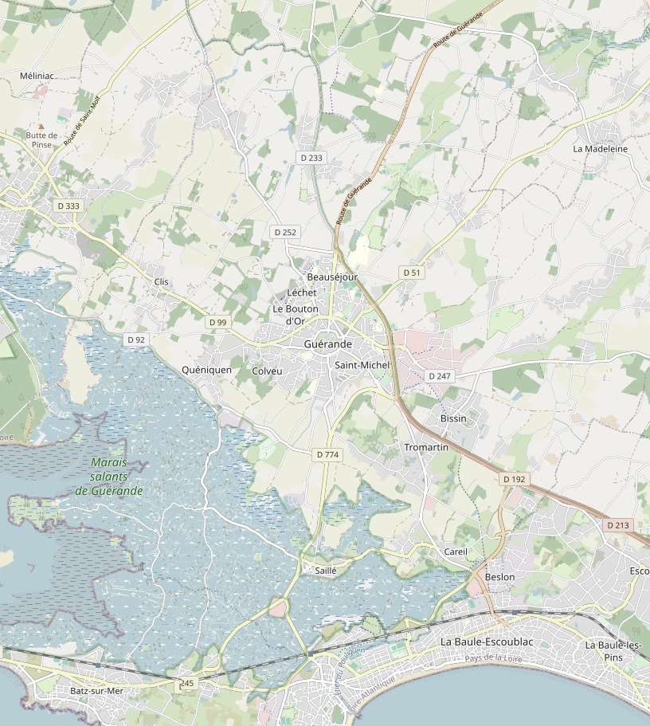
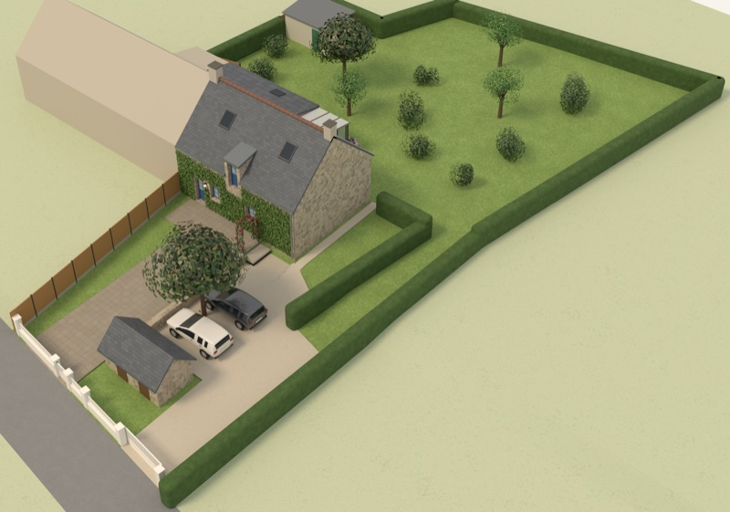

À vendre · hameau de Miroux
Maison en pierre de 5 chambres, toiture neuve
521 000 €
sans frais d’agence
- 148 m² au sol
- 5 chambres dont 1 de plain-pied
- 855 m² de terrain
- DPE A énergie et climat
L’essentiel
5 chambres, dont deux suites
L’une de plain-pied, l’autre à l’étage, chacune avec sa salle d’eau et son WC.
Toiture neuve et intérieur refait en 2025‑2026
Couverture en ardoise naturelle, planchers, cloisons, isolation, pompe à chaleur, électricité, assainissement.
Une terrasse de 60 m²
Côté jardin, le long du mur de pierre, sur un terrain de 855 m².
Classée A
La meilleure classe du DPE, pour l’énergie comme pour le climat, derrière des murs de pierre de 65 cm.
La Baule à 13 minutes
La plage à 13 minutes en voiture, les remparts de Guérande à 7, au calme d’un hameau.
Le rez-de-chaussée, avec une suite de plain-pied
On entre dans un séjour de 32 m², traversant : la porte et deux fenêtres côté rue, une porte-fenêtre côté jardin, vers la terrasse. La cuisine neuve est ouverte sur le séjour, avec son coin repas ; l’escalier en bois part de là. Au bout de la maison, une chambre de 16 m² a sa propre salle d’eau avec WC : on peut vivre ici sans monter l’escalier. Un cellier et un WC complètent le niveau.
| Séjour | 31,9 m² |
|---|---|
| Cuisine | 16,5 m² |
| Chambre de la suite | 16,0 m² |
| Sa salle d’eau avec WC | 4,5 m² |
| Cellier | 3,0 m² |
| Local technique | 2,5 m² |
| WC | 1,5 m² |
| Surface au sol du rez-de-chaussée | 75,9 m² |
L’étage, quatre chambres dont une suite
Un couloir éclairé par les fenêtres de toit dessert trois chambres d’une dizaine de m² et une salle d’eau avec WC. Au bout, une seconde suite : une chambre de 16 m² et sa salle d’eau avec WC.
| Chambre de la suite | 16,0 m² |
|---|---|
| Sa salle d’eau avec WC | 4,5 m² |
| Chambre | 10,8 m² |
| Chambre | 10,6 m² |
| Chambre | 10,6 m² |
| Salle d’eau avec WC | 4,0 m² |
| Couloir | 15,2 m² |
| Surface au sol de l’étage | 71,7 m² |
Un terrain de 855 m², une terrasse de 60 m²
Côté rue, au sud : une cour et la façade en pierre. Derrière la maison : une terrasse de 60 m², le long du mur de pierre, puis le jardin et ses grands arbres. La maison est accolée à sa voisine par le pignon est.
| Terrain | 855 m² |
|---|---|
| Terrasse | 60 m², au nord |
| Cour | au sud, côté rue |
| Portail | battant, motorisé |
| Jardin | au nord, derrière la terrasse |
| Piscine | possible |
Il n’en restait que les murs
C’était une grange abandonnée. Nous en avons gardé les murs de pierre, épais de 65 cm, et tout refait en 2025‑2026, toiture comprise. La fibre optique arrive jusqu’à la maison : on peut y télétravailler sereinement.
Toiture neuvecouverture en ardoise naturelle, posée en 2025
Planchers, cloisons et plafonds neufsmurs isolés par 14 cm d’isolant, ventilation mécanique hygroréglable
Pompe à chaleur air/eauelle chauffe la maison par des radiateurs à robinets thermostatiques et produit l’eau chaude
Double vitragemenuiseries neuves et fenêtres de toit
Électricité neuveattestation Consuel, compteurs d’eau et d’électricité individuels
Assainissement individuel neufcontrôlé conforme par le SPANC le 04/06/2025
Cuisine neuveplaques à induction et hotte ; plomberie, trois salles d’eau, sols et peintures neufs
Fibre optique jusqu’à la maison, 1 Gbit/s et plusde quoi télétravailler
Le budget d'énergie
Une ancienne grange classée A : murs isolés, ventilation hygroréglable, pompe à chaleur.
- 55 kWh/m²/an
- 2 kg CO₂/m²/an
Montant estimé des dépenses annuelles d’énergie pour un usage standard : entre 769 € et 1 041 € par an. Prix moyens des énergies indexés au 1er janvier 2021, 2022 et 2023 (abonnements compris).
Diagnostic de performance énergétique n° 2544E3312568I du 20/10/2025, valable jusqu’au 19/10/2035.
Miroux, au nord de Guérande
Le hameau est au nord de la ville. Deux collèges sont à cinq minutes en voiture. De l’arrêt de bus, la ligne 7 rejoint le centre de Guérande en moins de dix minutes ; les cars des collèges et des lycées s’y arrêtent aussi.
| Depuis la maison | En voiture | Distance |
|---|---|---|
| Arrêt de bus « Miroux » (ligne 7) | 200 m à pied | |
| Supermarché et commerces de Villejames | 6 min | 4,4 km |
| Guérande, cité médiévale | 7 min | 3,5 km |
| Gare de La Baule-Escoublac (TGV) | 12 min | 10,3 km |
| Plage de La Baule | 13 min | 11,1 km |
| Saint-Nazaire | 21 min | 22 km |
| Nantes | 1 h 12 | 85 km |

Autour des maisons


Acheter sans agence immobilière, comment ça se passe ?
La visite
Sur rendez-vous : appelez-nous ou écrivez-nous.
L’offre
Vous nous adressez votre proposition par écrit.
La promesse
Rédigée par les notaires et signée par l’acheteur et le vendeur ; les diagnostics et le dossier technique de la maison y sont annexés.
L’acte de vente
Signé chez le notaire : la maison est à vous.
Pas de frais d’agence : le prix affiché est le prix payé, hors frais de notaire.
Qui vend ?
Nous sommes deux amis, Dimitri et Olivier. Nous avons rénové cette maison en 2025‑2026 : nous avons choisi les artisans et suivi les travaux, nous la connaissons sur le bout des doigts.
C’est à nous que vous parlez, de la première visite à la signature chez le notaire. Posez-nous toutes vos questions : ce qu’il y a derrière les cloisons, qui a posé quoi, ce qui est garanti. Nous avons les réponses et les factures.

Olivier de Sauvebœuf
Votre interlocuteur pour les visites et les questions
Vos questions
Quand peut-on emménager ?
La maison est libre d’occupants : la vente peut se faire dès la signature d’une promesse.
La toiture a-t-elle été refaite ?
Oui, elle est neuve : couverture en ardoise naturelle, posée en 2025.
Combien coûte l’énergie ?
Selon le DPE, entre 769 € et 1 041 € par an, tous usages. Pompe à chaleur air/eau, murs isolés, ventilation hygroréglable.
Qu’y a-t-il dans la cuisine ?
Des plaques à induction et une hotte, neuves. Les autres emplacements sous le plan de travail sont libres, fermés par des rideaux.
Quelle est la surface ?
148 m² au sol.
Et l’assainissement ?
Individuel, neuf (2025), contrôlé conforme par le SPANC le 04/06/2025.
Et la fibre ?
Oui, jusqu’à la maison : les fourreaux sont posés et la fibre arrive au compteur électrique. Il ne reste qu’à choisir son opérateur, qui pose la prise à l’abonnement. D’après la carte de l’Arcep (juin 2026), cinq opérateurs proposent ici 1 Gbit/s et plus, en réception comme en émission : de quoi télétravailler et enchaîner les visioconférences.
Peut-on créer une piscine ?
Oui, c’est possible : le plan local d’urbanisme de Guérande admet les piscines sur ce terrain. Un bassin de 10 à 100 m² se déclare en mairie (déclaration préalable), et 60 % du terrain doivent rester en pleine terre : il reste la place d’un bassin de taille moyenne, entouré de pelouse.
Pourquoi vendre sans agence ?
Nous vendons nous-mêmes la maison que nous avons rénovée : pas de frais d’agence, le prix affiché est le prix payé, hors frais de notaire.
La maison est-elle mitoyenne ?
Oui, d’un côté : elle est accolée à sa voisine par le pignon est. Le mur qui les sépare est en pierre, épais de 70 cm, avec une double isolation thermique et phonique.
Les autres maisons rénovées
3, 4 ou 5 chambres : parmi nos maisons voisines, il y en a une à votre mesure.

Cinq chambres, c’est trop ?
La maison voisine en a trois et un bureau, autour d’une pièce de vie de 63 m².

Vous voulez plus de terrain ?
La troisième maison a quatre chambres, dont deux de plain-pied, sur 1 045 m².

Les trois maisons ensemble ?
Douze chambres sur trois parcelles voisines, à acheter ensemble ou séparément.
Une grange de hameau du XIXᵉ siècle
Sur le plan cadastral de 1819, un ensemble bâti figure déjà à l’emplacement de la maison. La rangée actuelle, en granite et moellon, a été reconstruite entre 1863 et 1874, d’après l’inventaire du patrimoine des Pays de la Loire.
Le plan local d’urbanisme de Guérande la repère comme « bâtiment patrimonial à protéger ». Avant les travaux, en septembre 2024, l’architecte conseil de la Ville, architecte du patrimoine, est venu sur place nous conseiller.
Les actes de propriété appellent cette maison « la maison Madeleine ». L’esquisse de l’architecte conseil de la Ville, dessinée avant les travaux, est celle de cette façade.


Prix : 521 000 €, sans frais d’agence, frais de notaire en sus.
Plans 2D et 3D : illustrations non contractuelles. Photos : maison meublée pour la mise en vente, juillet 2026 pour la plupart ; photo de la terrasse retouchée, mobilier ajouté à l’image.
Les informations sur les risques auxquels ce bien est exposé sont disponibles sur le site Géorisques : www.georisques.gouv.fr
Histoire de la maison, sources : Plan cadastral de 1819, section A2, parcelles 869 à 872 · Inventaire général du patrimoine culturel, Pays de la Loire, dossier IA44004013 · Plan local d’urbanisme de Guérande, article L.151-19 du Code de l’urbanisme · Avis de l’architecte conseil de la Ville de Guérande, 19/09/2024.
Photos des environs, recadrées : Plage de La Baule : WALTER, Unsplash ; Villa Rose de Mer, La Baule : Harrieta171, Wikimedia Commons, CC BY-SA 4.0 ; Marais salants de Guérande : Jan van der Wolf, Pexels ; Porte Saint-Michel, Guérande : Andrea Corsica, Wikimedia Commons, CC BY-SA 4.0 ; Rue de la Psalette, Guérande : Thanh Ly, Pexels ; Baie de La Baule : Emmanuel Kierzkowski, Wikimedia Commons, CC BY-SA 3.0.


Carte : fond et zones bâties © les contributeurs d’OpenStreetMap ; contour de La Baule-Escoublac : IGN, Admin Express, Licence Ouverte.